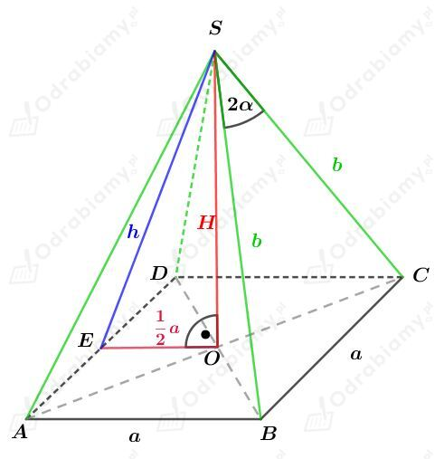
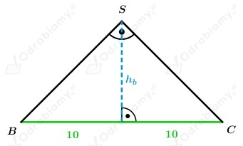
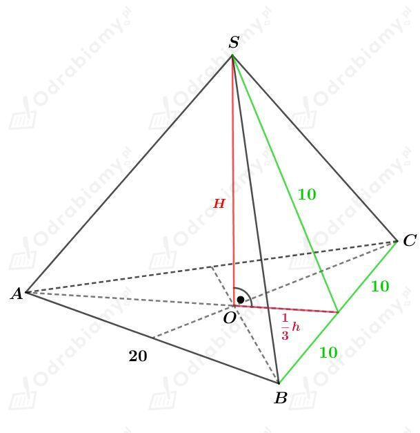
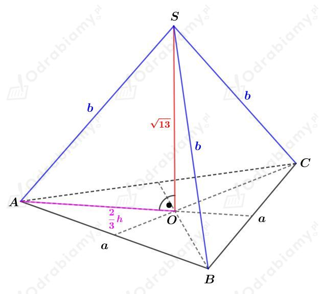
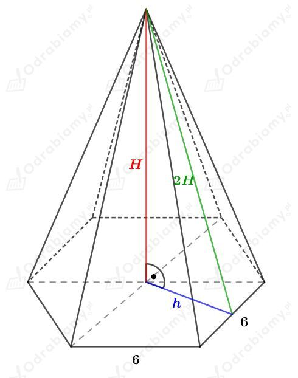
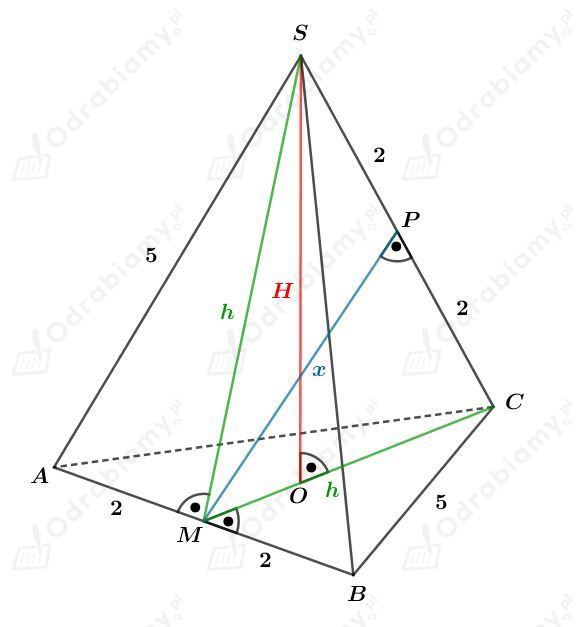
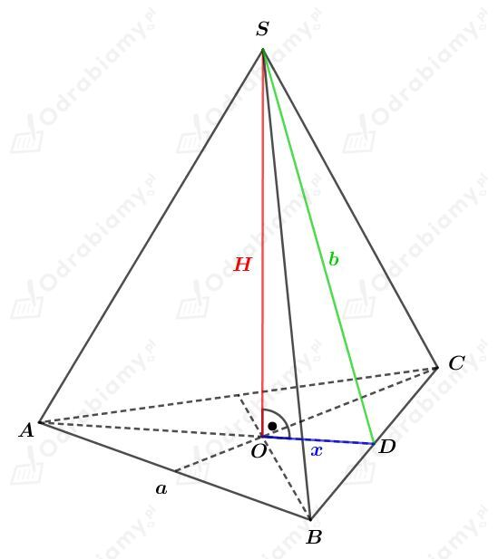
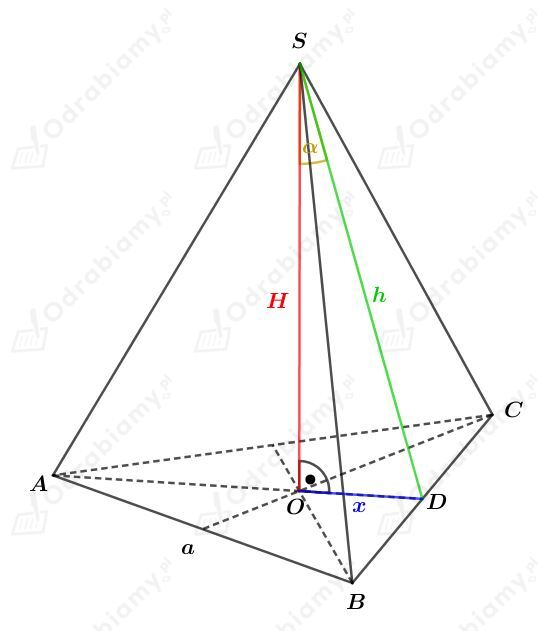
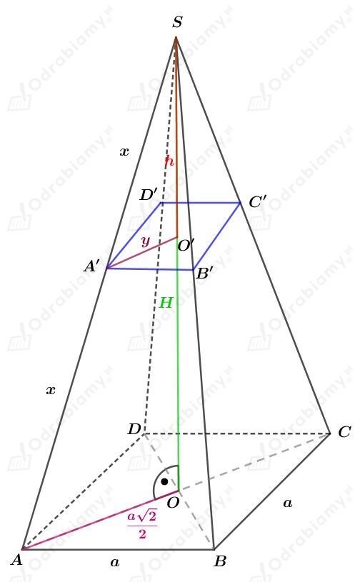
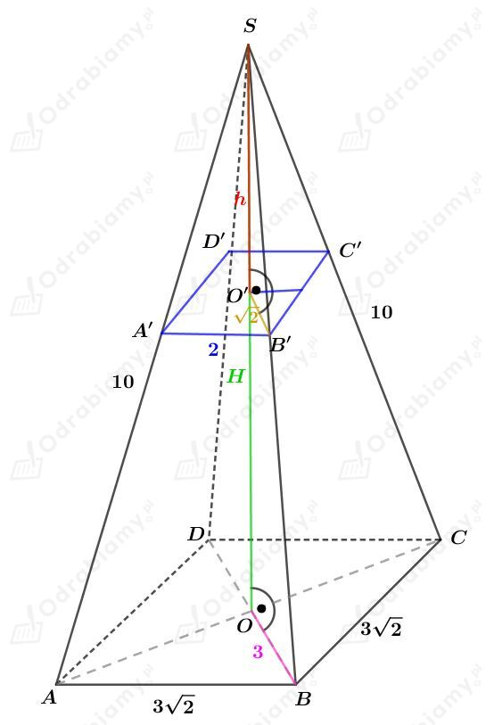

| Objętość ostrosłupa Objętość dowolnego ostrosłupa wyraża się za pomocą wzoru: gdzie Pp jest polem powierzchni podstawy, a H - długością wysokości tego ostrosłupa. |
Rysunek:

Dodatkowo, wiemy, że pole jednej ściany bocznej tego ostrosłupa jest równe S.
Korzystając ze wzoru na pole trójkąta mamy:
Korzystając z twierdzenia cosinusów dla trójkąta BCS mamy:
Korzystając ze wzoru na cosinus podwojonego kąta otrzymujemy:
Podstawiając wyznaczone wcześniej b2 mamy:
Korzystając ze wzoru na sinus podwojonego kąta mamy:
Korzystając ze wzoru na pole trójkąta mamy:
Korzystając z twierdzenia Pitagorasa dla trójkąta EOS mamy:
Obie strony równości są dodatnie, więc:
Wyznaczmy objętość tego ostrosłupa. Mamy:
Dany jest ostrosłup prawidłowy trójkątny, którego ściany boczne są trójkątami prostokątnymi. Przeciwprostokątna tego trójkąta ma długość 20 cm. Naszkicujmy to.

Zauważmy, że wysokość ściany bocznej dzieli ją na dwa trójkąty prostokątne o katach 90º, 45º, 45º, zatem wysokość opuszczona na tą przeciwprostokątną ma długość
Rysunek:

Wyznaczmy długość wysokości h trójkąta równobocznego będącego podstawą tego ostrosłupa. Mamy:
Korzystając z twierdzenia Pitagorasa mamy:
Wyznaczmy pole powierzchni podstawy tego ostrosłupa. Korzystając ze wzoru na pole trójkąta równobocznego mamy:
Wyznaczmy objętość tego ostrosłupa. Mamy:
Rysunek:

Z treści zadania wiemy, że suma długości wszystkich krawędzi tego ostrosłupa wynosi 21, stąd mamy:
Korzystając ze wzoru na długość wysokości trójkąta równobocznego mamy:
Korzystając z twierdzenia Pitagorasa dla trójkąta AOS mamy:
Zauważmy, że dla a=18 mamy b=7-18=-11<0, więc ten przypadek odrzucamy.
Więc a=3.
Wyznaczmy objętość tego ostrosłupa. Mamy:
Rysunek:

Korzystając ze wzoru na długość wysokości trójkąta równobocznego mamy:
Korzystając z twierdzenia Pitagorasa mamy:
Wyznaczmy pole powierzchni podstawy tego ostrosłupa. Korzystając ze wzoru na pole trójkąta równobocznego mamy:
Wyznaczmy objętość tego ostrosłupa. Mamy:
| Wysokość czworościanu foremnego o krawędzi a wyraża się za pomocą wzoru: a jego objętość - za pomocą wzoru: |
a)
Dany jest czworościan foremny, którego wysokość ma długość 2 cm.
Niech a będzie długością krawędzi tego czworościanu.
Korzystając ze wzoru na długość wysokości czworościanu foremnego mamy:
Wyznaczmy objętość tego czworościanu. Korzystając ze wzoru na objętość czworościanu foremnego mamy:
b)
Dany jest czworościan foremny, którego wysokość H jest o 1 cm krótsza od wysokości h jego ściany.
Niech a będzie długością krawędzi tego czworościanu, czyli wtedy korzystając ze wzoru na długość wysokości trójkąta równobocznego mamy:
Skoro wysokość H jest o 1 cm krótsza od wysokości h jego ściany, to zapiszemy równanie:
Wyznaczmy objętość tego czworościanu. Mamy:
Korzystając ze wzoru skróconego mnożenia na sześcian sumy (a+b)3=a3+3a2b+3ab2+b3 mamy:
Rysunek:

Korzystając z twierdzenia Pitagorasa dla trójkąta BCM mamy:
Korzystając z twierdzenia Pitagorasa dla trójkąta CMP mamy:
Długość wysokości H ostrosłupa jest równa długości wysokości trójkąta CMS opuszczonej na bok CM.
Porównując pole tego trójkąta obliczonego na dwa sposoby mamy:
Wyznaczmy pole powierzchni podstawy. Mamy:
Wyznaczmy objętość tego ostrosłupa. Mamy:
Rysunek pomocniczy:

Z treści zadania wiemy, że:
Dodatkowo, korzystając ze wzoru na pole powierzchni całkowitej ostrosłupa Pc=Pp+Pb mamy:
Korzystając ze wzorów na pole trójkąta (po lewej stronie równości) i na pole trójkąta równobocznego (po prawej stronie równości) mamy:
Zauważmy, że odcinek x stanowi 1/3 długości wysokości trójkąta równobocznego będącego podstawą tego ostrosłupa. Korzystając ze wzoru na długość wysokości trójkąta równobocznego mamy:
Korzystając z twierdzenia Pitagorasa dla trójkąta ODS mamy:
Obliczmy objętość tego ostrosłupa. Mamy:
Rysunek:

Zauważmy, że odcinek x stanowi 1/3 długości wysokości trójkąta równobocznego będącego podstawą tego ostrosłupa. Korzystając ze wzoru na długość wysokości trójkąta równobocznego mamy:
Korzystając z funkcji tangens dla trójkąta prostokątnego ODS mamy:
Obliczmy objętość tego ostrosłupa. Mamy:
Rysunek:

Z podobieństwa trójkątów AOS i A'O'S otrzymujemy:
oraz również:
Obliczmy objętość ostrosłupa ABCDS. Mamy:
Obliczmy objętość ostrosłupa A1B1C1D1S. Mamy:
Obliczmy objętość V' ostrosłupa ściętego. Mamy:
Dany jest ostrosłup prawidłowy czworokątny.
Pole powierzchni jego podstawy wynosi 18 cm2. Niech a1 będzie krawędzią podstawy tego ostrosłupa. Stąd
Ostrosłup przecięto płaszczyzną równoległą do płaszczyzny podstawy. Punkty przecięcia tworzą kwadrat o polu 4 cm2. Niech a1 będzie długością boku tego kwadratu. Stąd
Rysunek:

Korzystając z twierdzenia Pitagorasa dla trójkąta OBS mamy:
Korzystając z podobieństwa trójkątów OBS oraz O'B'S mamy:
Podstawiając wyznaczone wcześniej H=√91 cm mamy:
Obliczmy objętość ostrosłupa ABCDS. Mamy:
Obliczmy objętość ostrosłupa powstałego nad płaszczyzną przecięcia. Mamy:
Obliczmy objętość bryły powstałej pod płaszczyzną przecięcia. Mamy: